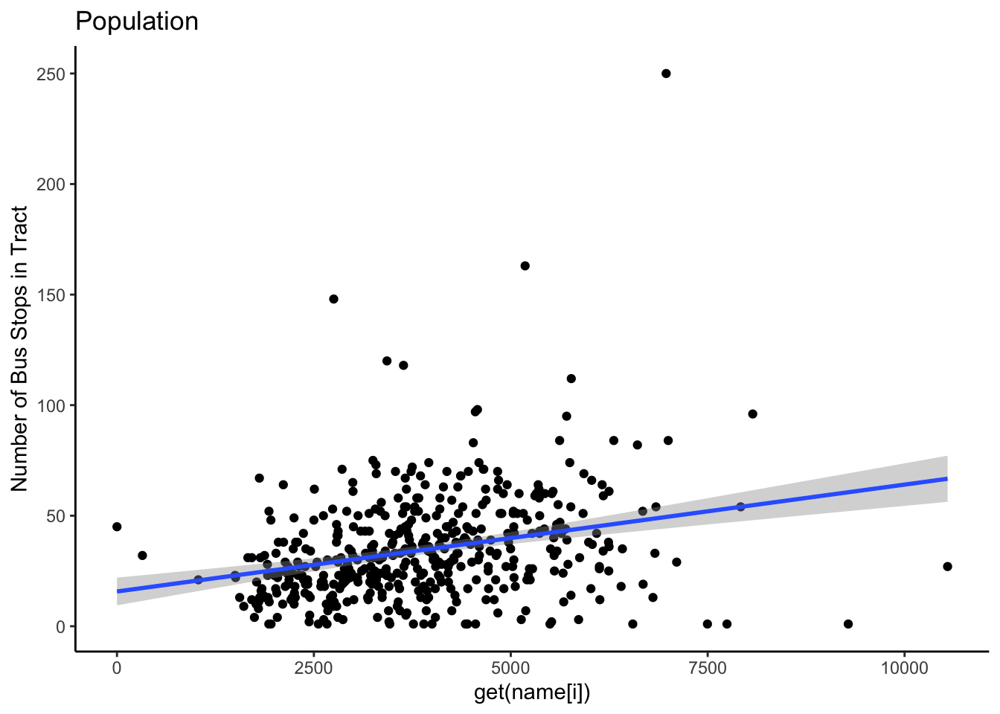
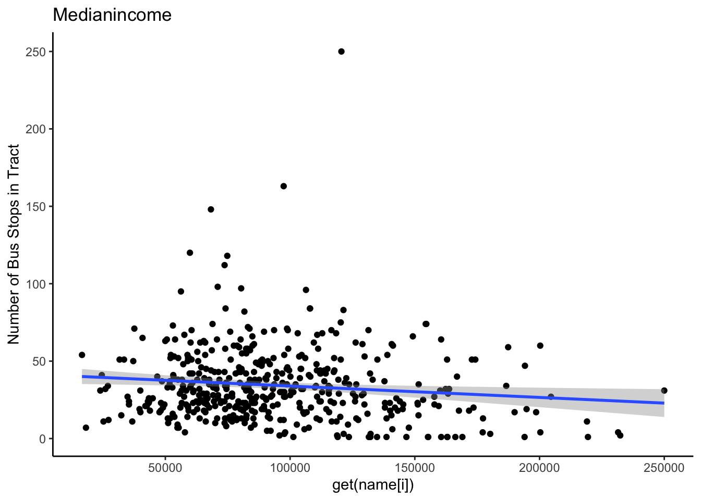
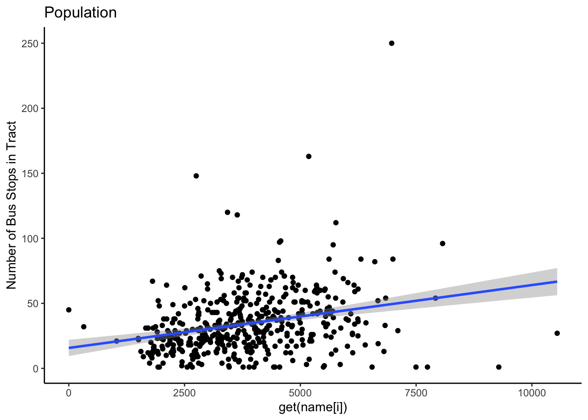
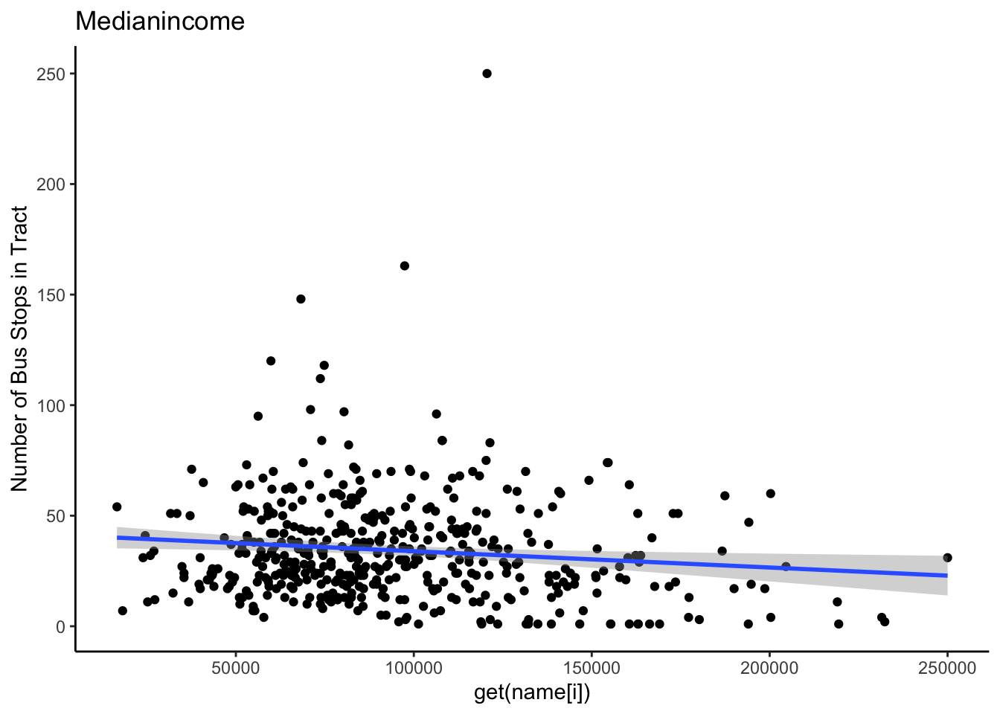
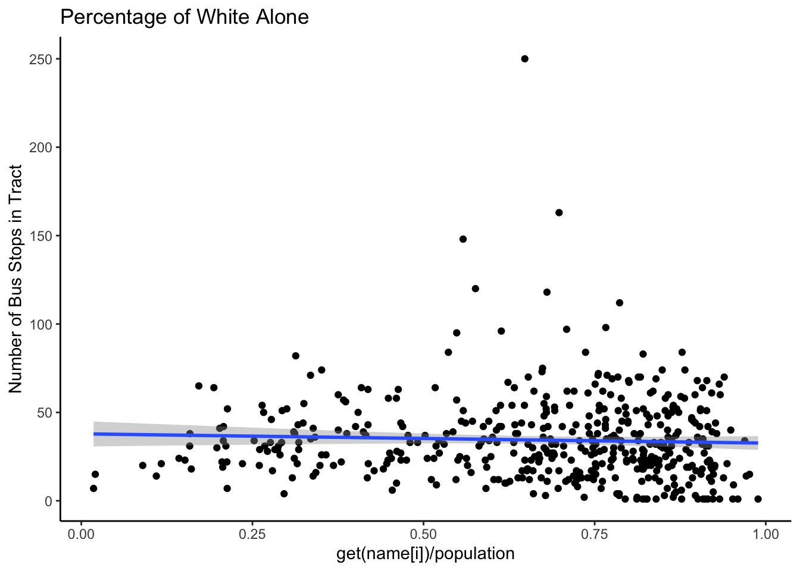
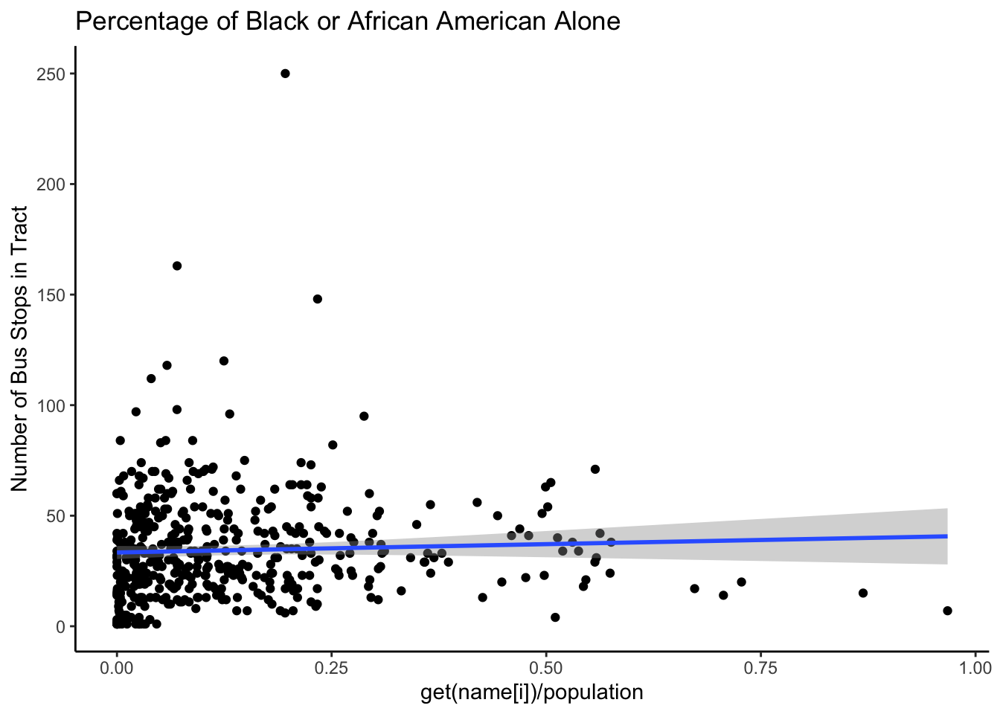
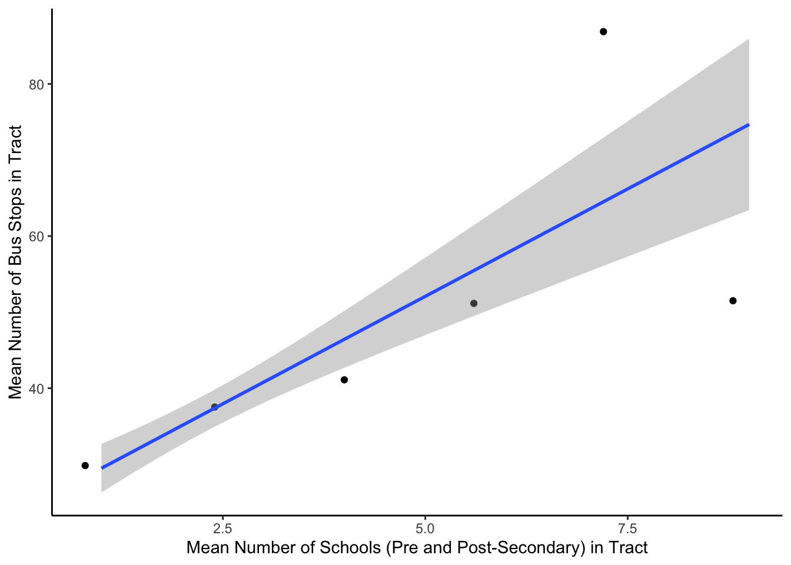
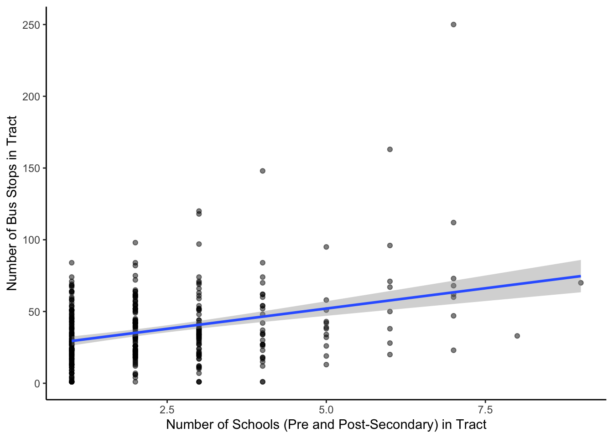
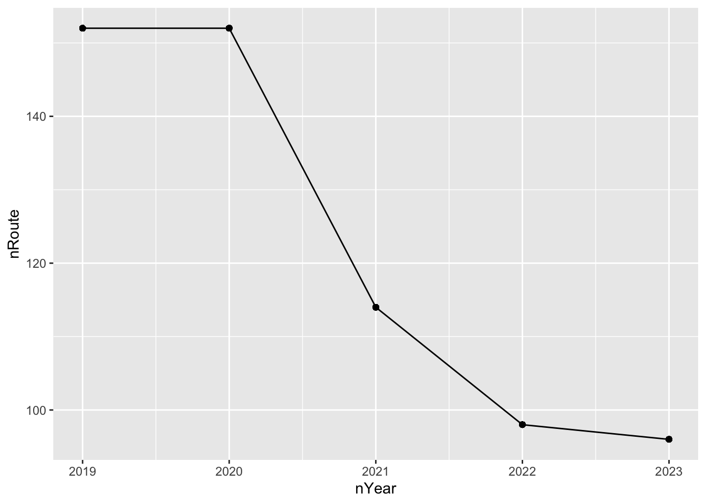

We were motivated to investigate the accessibility of public transportation within the Twin Cities area with the MetroTransit, being heavily influenced by concerns around equality. A large motivation of every community when they decide to invest heavily in public transportation infrastructure is to give lower-income communities the ability to travel around even when they do not own cars of their own, give individuals with disabilities the opportunity to continue their life, so if the public transportation has issues that pose as challenges for accessibility then that devalues the purpose of public transportation.
Starting with our first big research question, we were interested in researching whether there were more bus stops in locations based on income and population. The assumption was that there would be more stops in areas with higher population densities and areas that were lower income because those are the communities that would theoretically utilize these services the most. Lower-income communities because they couldn’t afford ridesharing or didn’t own a vehicle and in higher-density areas because more individuals would be served. We were also interested in narrowing this broad research question about the urban population to looking into racial demographics of the Twin Cities areas to see if the most marginalized communities (Black and Latino) were fully served. However, this idea had to be swept aside as there weren’t enough POC groups within the Twin Cities area to create a compelling enough case. Thus, we decided to find another subsection of the population to observe: students. We wanted to see the average number of bus stops located in a particular tract and how that correlated with the average number of schools (primary, middle, high schools, and universities), so we could then conclude whether public transit was accessible to younger people as they also rely on public transportation because many can’t drive. The next question we wanted to understand was related to the ridership changes, especially after the COVID-19 pandemic. It is interesting to observe how the ridership has changed after a pandemic where social distancing and quarantining were so important. This is another indirect method of seeing the accessibility of public transportation because you can learn whether or not initiatives for greater accessibility have been ruled back after the pandemic. For example, has it been a priority for MetroTransit to create a safe environment for their immuno-compromised citizens? We know the number of bus stops has been rolled back after COVID-19, how has that affected certain populations who rely on public transit? To answer these questions, in addition to tracking how daily ridership has varied throughout the years, we narrowed it down by delving into how ridership has changed from weekends to weekdays and different transit lines. Certain populations use certain lines more than others, and certain individuals use transit more on weekdays, i.e., those who use public transit to work or students to school.
To answer the first broad question, we plot a scatter plot to observe the relationship between the population and number of stops for all census tracts. From the visualization, we observe a positive association between population and the number of bus stops. Then we dig into the income where we use the median income of each tract to measure. From the scatter plot we create, we observe a slightly negative association between median income and the number of bus stops. Then, we focus on the effect of different races on number of buses. Focusing on people who identified as white alone, we observe from the scatter plot that there is a slightly negative association between the percentage of people who identified as white only and the number of bus stops. Besides that, the percentage of people who identify as the other races does not show significant associations with the number of bus stops.




Having those results back to the context, we can roughly conclude that by looking at the different aspects of demographics, the census tracts which has larger populations or lower median income are more likely to have a larger number of bus stops. The bus stops are mainly located in downtown Saint Paul and downtown Minneapolis where the census tract would be relatively crowded with lower income. For races, we can conclude that the census tract which has a lower percentage of white has fewer bus stops. The major customer group of public transportation is low-income people and people of color. This is aligned with the results we observe from the visualizations.
Besides those demographic aspects, we also research if the number of bus stops is related to education. From the visualization, we see a strong positive association between the number of schools and bus stops among the tracts. We can conclude that there are more bus stops around school which is understandable as students would be more reliant on public transportation.


To answer the second broad question, we count the number of routes and ridership Metro Transit had before, during, and after the pandemic. From our visualizations, we can see that in the years 2019 and 2020, there was a significant drop in the number of routes and ridership. During the pandemic, there was a lack of drivers and customers which led to the shutting down of many routes. From the current data, the number of routes hasn’t returned to the origin, but the ridership has gradually increased since 2021.


From what we currently have, the main takeaway is that the bus stops are mainly located in the census tracts that have more people, lower income, lower percentage of White, or with great numbers of schools. The public transportation system has been significantly impacted during Covid-19 as shown by the shutting down of bus routes and loss of ridership. The limitation of this data is that we can only use ridership and number of bus stops to evaluate the accessibility of public transportation to customers. Further, we will refine our current visualizations and investigate the job opportunities in the target area with more data to see how could it related to the transportation system.